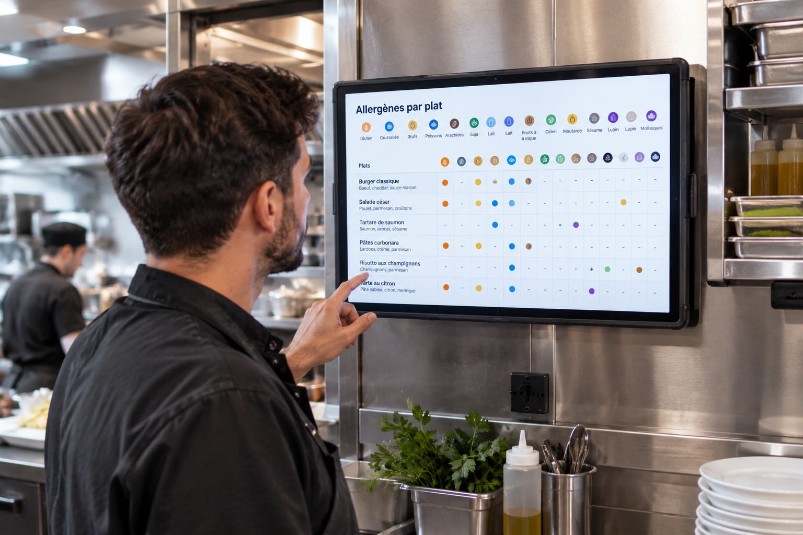

Allergènes en restauration 2026 : obligations d’affichage, sanctions et responsabilité
Un client sur trois déclare être concerné par une allergie ou une intolérance alimentaire. Pour le restaurateur, l’enjeu n’est pas seulement réglementaire : une erreur peut coûter une vie. Ce guide détaille la liste officielle des 14 allergènes, les modalités d’affichage légales, les sanctions encourues, la responsabilité civile et pénale en cas d’accident, et les bonnes pratiques pour gérer ce risque en cuisine au quotidien.
Les 14 allergènes majeurs : la liste officielle
La liste des 14 allergènes à déclaration obligatoire est fixée par l’annexe II du règlement UE n° 1169/2011 (dit « INCO »). Elle s’applique à l’identique dans toute l’Union européenne :
| Allergène | Exemples de produits concernés |
|---|---|
| Céréales contenant du gluten | Blé, seigle, orge, avoine, épeautre, kamut et leurs dérivés (pain, pâtes, sauces liées) |
| Crustacés | Crevettes, crabes, langoustines, homards |
| Œufs | Sauces, pâtisseries, pâtes fraîches |
| Poissons | Fumets, sauces au poisson, ana |
| Arachides | Huile d’arachide, sauces asiatiques, pâtisseries |
| Soja | Sauce soja, tofu, lécithine de soja (émulsifiant) |
| Lait | Crème, beurre, fromage, poudre de lait |
| Fruits à coque | Amandes, noisettes, noix, noix de cajou, pistaches, noix de pécan, noix du Brésil, macadamia |
| Céleri | Bouillons, soupes, sauces |
| Moutarde | Vinaigrettes, marinades, charcuterie |
| Graines de sésame | Houmous, pains spéciaux, tahin |
| Anhydride sulfureux et sulfites | Vins, fruits secs, certaines charcuteries (au-delà de 10 mg/kg) |
| Lupin | Farines sans gluten, certains pains |
| Mollusques | Moules, huîtres, escargots, calmars |
Le règlement vise aussi les hybrides de céréales et précise nommément chaque fruit à coque concerné. Cette liste est exhaustive au sens réglementaire : aucun autre allergène n’est couvert par l’obligation d’affichage (voir la section dédiée plus bas).
Les textes qui encadrent l’obligation
Deux textes fondent l’obligation d’information sur les allergènes en restauration :
- Règlement UE n° 1169/2011 (INCO), applicable depuis le 13 décembre 2014 : fixe la liste des 14 allergènes à l’échelle européenne.
- Décret n° 2015-447 du 17 avril 2015, relatif à l’information des consommateurs sur les allergènes pour les denrées non préemballées — c’est-à-dire les plats servis en restauration. En vigueur depuis le 1er juillet 2015, il est aujourd’hui codifié aux articles R.412-12 à R.412-16 du code de la consommation, après la recodification du code intervenue en 2016.
Comment informer vos clients : légal vs illégal
L’article R.412-14 du code de la consommation impose une information écrite, lisible et visible dans les zones accessibles au public. C’est le point que la plupart des restaurateurs maîtrisent mal.
| Modalité | Conforme ? | Explication |
|---|---|---|
| Liste des allergènes directement sur la carte/menu | ✅ Oui | Le format le plus simple et le plus sûr |
| Affiche ou tableau récapitulatif visible en salle | ✅ Oui | À condition d’être lisible et à jour |
| Renvoi écrit vers un registre/document sur demande | ✅ Oui | Le client doit voir l’indication écrite qui lui dit comment obtenir l’info |
| QR code menant à un document allergènes | ✅ Oui | Accepté s’il est clairement indiqué et accessible sans blocage |
| Information orale uniquement (« demandez au serveur ») | ❌ Non | Illégal même si le personnel connaît parfaitement les recettes |
| Aucune mention, information donnée seulement si le client demande spontanément | ❌ Non | Le client doit savoir que l’information existe sans avoir à le deviner |
En pratique, la solution la plus robuste reste un tableau croisant chaque plat de la carte avec les 14 allergènes, mis à jour à chaque changement de recette ou de fournisseur, et accessible sans que le client ait à le demander.

Qui contrôle et quelles sanctions ?
Depuis le 1er janvier 2024, la réforme de la police sanitaire unique a redéfini les compétences : la DGAL (Direction Générale de l’Alimentation) est désormais seule compétente pour la sécurité sanitaire des aliments, tandis que la DGCCRF conserve ses attributions sur l’étiquetage et la loyauté commerciale. Sur le terrain, c’est la DDPP qui reste l’interlocuteur commun lors des contrôles en établissement.
| Manquement | Sanction | Base légale |
|---|---|---|
| Défaut d’information écrite sur les allergènes | 1 500 € (3 000 € récidive) personne physique 7 500 € personne morale | Contravention de 5e classe, code de la consommation |
| Information trompeuse exposant à un risque avéré pour la santé | Jusqu’à 2 ans de prison et 300 000 € d’amende | Délit de tromperie, art. L.441-1 code de la consommation |
| Mise en danger avérée de la santé | Jusqu’à 7 ans de prison et 750 000 € d’amende | Délit de tromperie aggravé |
Notre checklist HACCP gratuite couvre la traçabilité, les températures, le nettoyage et la gestion des allergènes — en une seule fiche imprimable.
Télécharger la checklist →Responsabilité civile et pénale en cas d’accident
Au-delà de la contravention pour défaut d’affichage, c’est la responsabilité du restaurateur en cas d’accident grave qui doit être bien comprise.
- Responsabilité civile : fondée sur l’article 1240 du Code civil (faute, dommage, lien de causalité). La faute peut résider dans un défaut d’information écrite ou une contamination croisée connue et non signalée.
- Responsabilité pénale : en cas de décès ou de blessures graves, les qualifications d’homicide involontaire (art. 221-6 du Code pénal) ou de blessures involontaires (art. 222-19) peuvent s’appliquer en cas de manquement à une obligation de sécurité ou de prudence.
Le régime applicable est une obligation d’information et de moyens : informer clairement, prévenir les contaminations croisées raisonnablement évitables. Ce n’est pas une obligation de résultat absolu — le restaurateur n’a pas à garantir l’absence totale de risque, notamment pour des traces fortuites imprévisibles. Mais la charge de la preuve d’une bonne information pèse sur lui, ce qui rend la documentation écrite d’autant plus importante.
Le cas des allergies non couvertes par les 14 allergènes officiels
C’est un angle mort fréquent chez les restaurateurs qui se croient protégés dès qu’ils affichent les 14 allergènes réglementaires. L’ANSES a identifié plusieurs allergènes émergents qui ne figurent pas dans la liste officielle : le kiwi, le sarrasin, le lait de chèvre ou de brebis, les pignons de pin, et certains autres fruits.
Pour ces allergies, aucune obligation légale d’affichage ne s’impose — seuls les 14 allergènes du règlement INCO sont couverts par le décret 2015-447. Mais attention : si un client a explicitement signalé son allergie à un produit non listé, et que le restaurateur n’a pas agi avec la prudence attendue, sa responsabilité civile de droit commun (article 1240 du Code civil) reste engageable — simplement en dehors du cadre protecteur et bien défini de l’affichage réglementaire.
Gérer les allergènes en cuisine : éviter la contamination croisée
L’affichage ne suffit pas si la cuisine ne suit pas. Les bonnes pratiques recommandées par les guides professionnels HACCP :
- Une fiche allergène par plat, mise à jour à chaque changement de recette ou de fournisseur — voir notre guide des fiches techniques.
- Un tableau récapitulatif croisant chaque plat de la carte avec les 14 allergènes, affiché en cuisine et consultable en salle.
- Des zones et ustensiles dédiés pour les commandes « sans allergène » : planches, couteaux, huiles de friture séparées.
- Un nettoyage renforcé des plans de travail entre deux préparations à risque de contamination croisée.
- La conservation des documents allergènes fournisseurs, qui font partie de votre traçabilité alimentaire obligatoire.
Ces éléments doivent être documentés dans votre Plan de Maîtrise Sanitaire, qui sera vérifié lors de tout contrôle sanitaire.
Former son personnel : le maillon souvent négligé
Un affichage impeccable ne protège pas si le personnel de salle improvise une réponse erronée face à un client inquiet. La règle à transmettre à toute l’équipe est simple : ne jamais improviser. En cas de doute sur la composition d’un plat, le serveur doit vérifier auprès de la cuisine ou consulter la fiche technique avant de répondre — jamais après.
La gestion des allergènes fait d’ailleurs explicitement partie du contenu de la formation HACCP obligatoire de 14 heures. Assurez-vous que ce module soit réellement assimilé par vos équipes, et pas seulement validé sur le papier.
Questions fréquentes sur les allergènes en restauration
Quels sont les 14 allergènes à déclarer obligatoirement ?
La liste officielle, fixée par l’annexe II du règlement UE 1169/2011, comprend : céréales contenant du gluten, crustacés, œufs, poissons, arachides, soja, lait, fruits à coque, céleri, moutarde, graines de sésame, anhydride sulfureux et sulfites, lupin, et mollusques. Cette liste s’applique à l’identique dans toute l’Union européenne.
Peut-on informer les clients uniquement à l’oral sur les allergènes ?
Non. Le décret n° 2015-447 impose une information sous forme écrite, lisible et visible. L’information orale seule, même si le personnel connaît parfaitement la composition des plats, ne suffit pas légalement. Vous pouvez afficher directement la liste sur la carte, ou indiquer par un renvoi écrit comment consulter un registre tenu à disposition.
Quelles sanctions en cas de défaut d’affichage des allergènes ?
Le défaut d’information constitue une contravention de 5e classe : jusqu’à 1 500 € d’amende pour une personne physique (3 000 € en récidive), et 7 500 € pour une personne morale. Si l’absence d’information a exposé un client à un risque avéré, le délit de tromperie peut être invoqué, avec des peines pouvant atteindre 2 ans de prison et 300 000 € d’amende.
Qui contrôle le respect de l’obligation d’affichage des allergènes ?
Depuis le 1er janvier 2024, la sécurité sanitaire des aliments relève de la seule DGAL, dans le cadre de la réforme de la police sanitaire unique. La DGCCRF conserve ses compétences sur l’étiquetage et la loyauté commerciale. Sur le terrain, c’est la DDPP qui reste l’interlocuteur commun pour les deux administrations.
Que se passe-t-il en cas de choc allergique grave chez un client ?
La responsabilité civile du restaurateur peut être engagée sur le fondement de l’article 1240 du Code civil. En cas de décès ou de blessures graves, une qualification pénale d’homicide involontaire ou de blessures involontaires est possible. Un restaurateur a par exemple été condamné à 18 mois de prison avec sursis et à une interdiction définitive d’exercer par le tribunal correctionnel de La Roche-sur-Yon.
Un restaurant est-il responsable si un client a une allergie non listée parmi les 14 officielles ?
L’obligation légale d’affichage ne couvre que les 14 allergènes réglementaires. Pour une allergie non listée (kiwi, sarrasin, lait de chèvre...), aucune obligation d’affichage ne s’impose. Mais si le client a signalé son allergie et que le restaurateur n’a pas agi avec prudence, sa responsabilité civile reste engageable sur le fondement du droit commun.
Comment gérer les allergènes en cuisine sans se tromper ?
Les bonnes pratiques recommandées sont : une fiche allergène par plat mise à jour à chaque changement de recette ou de fournisseur, un tableau récapitulatif croisant chaque plat avec les 14 allergènes, la formation du personnel de salle et de cuisine, la séparation des zones et ustensiles pour les commandes sans allergène, et la conservation des documents allergènes transmis par les fournisseurs.